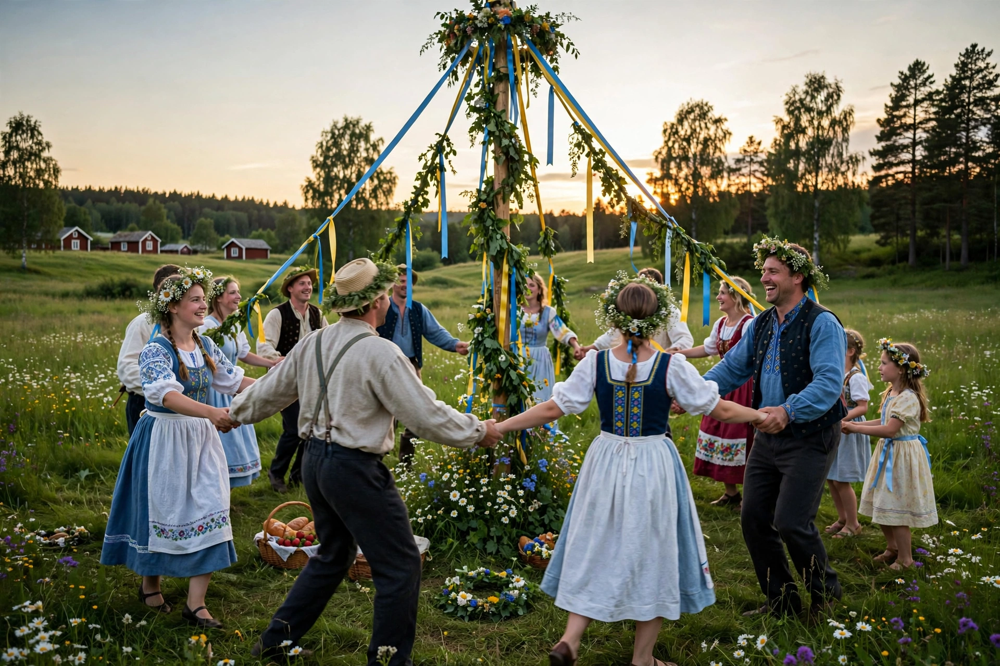

| Midsummer | |
|---|---|
 | |
| Also called | Midsommar, St John's Eve, Jaanipäev, Jāņi |
| Observed by | Many countries, especially in Northern Europe |
| Type | Cultural, seasonal |
| Date | Around the summer solstice, 19–25 June |
| Related to | Summer solstice; Nativity of John the Baptist |
Midsummer is a celebration of the season of summer, taking place on or near the summer solstice, the longest day of the year in the Northern Hemisphere. It is celebrated in many countries, most prominently in Northern Europe, where traditions include raising maypoles, lighting bonfires, dancing, feasting, and gathering flowers and herbs believed to gain special powers on this night.
The celebration has roots in ancient pre-Christian solstice festivals. With Christianisation, it became associated with the feast of the Nativity of Saint John the Baptist (24 June), and many of its customs take place on St John's Eve (23 June). The name "midsummer" reflects an older reckoning in which summer began in May, making the solstice the middle of the season.
In Sweden, Midsummer (Midsommar) is one of the most important holidays of the year: families gather around a decorated maypole (midsommarstång), dance, and eat pickled herring, new potatoes, and strawberries. In Finland (Juhannus), bonfires are lit by lakesides and saunas are central to the festivities. In Estonia (Jaanipäev) and Latvia (Jāņi), bonfires, singing, and the search for the mythical fern flower are traditional. In Denmark and Norway, St Hans fires are lit on beaches. Celebrations also occur in Lithuania, Ireland, parts of Britain (notably Cornwall), Spain (especially Galicia and Catalonia), Portugal, and Quebec (Saint-Jean-Baptiste Day).
Common customs include bonfires — believed to ward off evil spirits — jumping over flames, placing flowers under pillows to dream of one's future spouse, and gathering medicinal plants. The short or absent night at high latitudes gives the festival a special character.
See also: Summer solstice; Maypole; Bonfire; Saint John's Eve; Wheel of the Year.